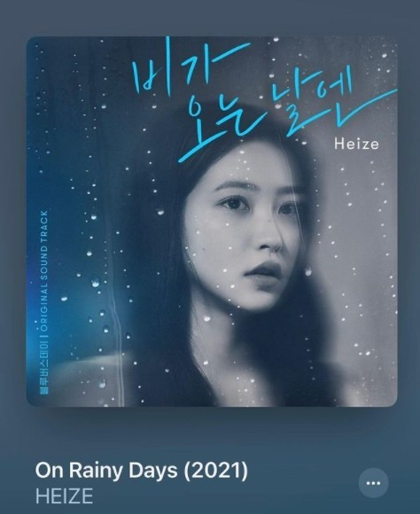

- 윤하 - 종이비행기
- (여자)아이들 - TOMBOY
- 비오 - 네가 없는밤
- 헤이즈 - 비가 오는 날엔
헤이즈 - 비가 오는 날엔

헤이즈의 비가 오는 날엔은 원래 원곡이 따로 있다 바로 하이라이트(전 비스트)의 히트곡 중
하나다. 헤이즈의 비가 오는 날엔은 이번 디지털드라마 [블루버스데이]의 OST로 리메이크 된 이번 곡은
헤이즈의 독보적인 음색과 특유의 감성으로 원곡과는 다른 매력을 보여주고 있는 곡 중 하나이다".
곡의 장르로는 발라드이며 대중들의 큰 사랑과 관심을 받는 곡 중 하나이다.